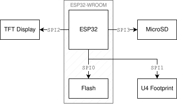
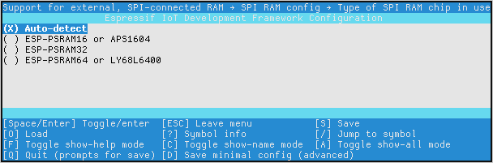

Installing a PSRAM chip on an ESP32 CYD
Table of Contents
1. Introduction
Some weeks ago, I started working on a project that involves an ESP32 Cheap Yellow Display (CYD) board. In total, this board has 520KiB of RAM1, which is a reasonable amount for most applications; however, since I wanted to allocate a large data buffer in memory and had to compile with the Bluetooth stack, it wasn’t enough for me. After evaluating different alternatives, I decided the best approach would be to use a PSRAM chip, through SPI.
The following table compares the static and dynamic memory impact2 of installing a PSRAM chip3 on my ESP32 CYD board, along with the impact of compiling my (unmodified) program with the Bluetooth stack.
| ☒ PSRAM, ☒ Bluetooth | ☒ PSRAM, ☑ Bluetooth | ☑ PSRAM, ☑ Bluetooth | |
|---|---|---|---|
| Total static Data RAM | 180736 bytes | 124580 bytes | 124580 bytes |
| Free static Data RAM | 168140 bytes | 106832 bytes | 106832 bytes |
| Free internal heap | 368204 bytes | 340712 bytes | 340003 bytes |
| Largest internal block | 172032 bytes | 118784 bytes | 118784 bytes |
| Free DMA heap | 303980 bytes | 293508 bytes | 292799 bytes |
| Largest DMA block | 172032 bytes | 118784 bytes | 118784 bytes |
| Free PSRAM heap | 0 bytes | 0 bytes | 4192024 bytes |
| Largest PSRAM block | 0 bytes | 0 bytes | 4128768 bytes |
Note that the memory from the PSRAM chip is not suitable for DMA operations.
2. Understanding the CYD board
In most CYD boards, there is a SOIC-8 footprint labeled as U4. This footprint is meant for an SPI flash chip4, and the default hardware configuration won’t support a PSRAM chip there for various reasons.
Before trying to install the PSRAM chip in this U4 footprint, it’s important to understand the base layout and connections of the CYD board. In my first attempts, I was not aware of some of this information, and led me to some mistakes.
2.1. The SPI buses
These boards usually come with an ESP32-WROOM module. From its datasheet, we can obtain most relevant information about the SPI buses, their purpose, and their pins. This ESP32 has four SPI controllers:
SPI0: Used internally for the 4MiB flash in the WROOM module.SPI1: Master-only bus; mapped to the same pins asSPI0. In the CYD board, connected to the empty U4 footprint. This controller will be used for accessing our PSRAM chip.SPI2(HSPI): General purpose bus, which can be configured as master or slave. In the CYD board, connected to the TFT display.SPI3(VSPI): General purpose bus, which can be configured as master or slave. In the CYD board, connected to the MicroSD card slot.
Below is a table of the pins used by each SPI controller in the ESP32-WROOM module5.
| SPI0 | SPI1 | SPI2 | SPI3 | |
|---|---|---|---|---|
CS |
19 (CMD) |
19 (CMD) |
23 (IO15) |
29 (IO5) |
CLK |
20 (CLK) |
20 (CLK) |
13 (IO14) |
30 (IO18) |
MISO |
21 (SD0) |
21 (SD0) |
14 (IO12) |
31 (IO19) |
MOSI |
22 (SD1) |
22 (SD1) |
16 (IO13) |
37 (IO23) |
HOLD |
17 (SD2) |
17 (SD2) |
26 (IO4) |
33 (IO21) |
WP |
18 (SD3) |
18 (SD3) |
24 (IO2) |
36 (IO22) |
Note how the flash and the U4 footprint use different controllers (SPI0 and
SPI1) while sharing the same pins of the ESP32. The following diagram shows how
the main components of the CYD board are connected.

The ESP32-WROOM datasheet explicitly warns that the pins shared by SPI0 and
SPI1, 17 to 22, are “not recommended for other uses” other than the integrated
flash. I assume that the original designer of the CYD left this SPI1 bus exposed
in the U4 footprint so that a simpler ESP32 module could be used with an
external flash.
Note that the SPI1 controller is unused in the CYD board, so it is available for
our PSRAM chip, but since its physical pins are shared with the internal flash,
we can’t directly solder a chip there, as it would interfere with the flash. The
hardware modification explained in this article tries to accomplish precisely
this: rerouting the necessary hardware pins so that the SPI1 controller can be
used without affecting SPI0.
2.2. Choosing the right PSRAM chip
Generally, when trying to install external RAM in the ESP32, the logical decision is to trust the official ESP-IDF documentation, which states:
ESP32 supports PSRAM connected in parallel with the SPI flash chip. While ESP32 is capable of supporting several types of RAM chips, ESP-IDF currently only supports Espressif branded PSRAM chips (e.g., ESP-PSRAM32, ESP-PSRAM64, etc).
This is not true, and even their own ESP-IDF configuration menu, launched
through idf.py menuconfig, also shows other supported models.

At first, since I was using ESP-IDF for my project, it seemed like I had no choice but to use something like the ESP-PSRAM32 which should provide enough memory for my use case. These official PSRAM modules won’t work, since they require an input of 1.8V, and our U4 footprint is routed to 3.3V. Fortunately, there are some alternatives like the APS1604M-3SQR-SN (2MiB) or APS6404L-3SQR-SN (8MiB), which support from 2.7 to 3.6V. I ended up using the latter.
Footnotes:
The memory in the ESP32 is mainly divided in IRAM (Instruction RAM) and DRAM (Data RAM). However, only half of the Data RAM can be used for static allocations, leaving the other half for “runtime-only allocations”. This limits both the size of the static data, and the size of the biggest dynamically-allocated block. See the ESP-IDF documentation for more information.
The static
Data RAM has been obtained from the idf.py size command, and the dynamic memory
data has been obtained with calls to heap_caps_get_free_size and
heap_caps_get_largest_free_block made at the entry point of the program. The
measured memory capabilities were MALLOC_CAP_INTERNAL, MALLOC_CAP_DMA and
MALLOC_CAP_SPIRAM.
The PSRAM chip used in this article was an APS6404L-3SQR-SN, which provides 8MiB of memory through SPI; however, the ESP32 is only able to map 4MiB of them.
For example, a W25Q32 or W25Q32JV. Personally, I have not tried to install one of these chips in a CYD, but I think that some hardware modifications would be needed to avoid collisions with the internal flash, as explained in the next subsections.
See Section 2.2 “Pin Description” and Section 4.2.2 “Serial Peripheral Interface (SPI)” of the ESP32-WROOM-32 datasheet.